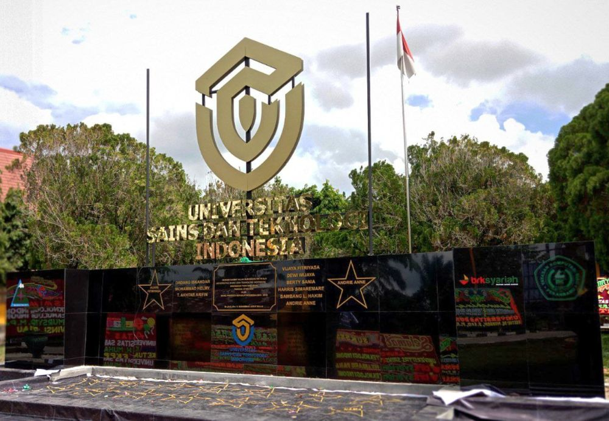

KAMPUS USTI

Sejarah USTI
Pada tanggal 2 April 2024, sebuah momen bersejarah terjadi di Kantor Lembaga Layanan Pendidikan Tinggi (LLDikti) Wilayah X Kota Padang. Kepala LLDikti Wilayah X, Afdalisma, SH, M.Pd, secara resmi menyerahkan Surat Keputusan (SK) Mendikbud No. 232/E/O/2024 yang mengubah bentuk institusi pendidikan tinggi dari sekolah tinggi menjadi universitas. Perubahan ini melibatkan STMIK Amik Riau, yang kini akan dikenal sebagai Universitas Sains dan Teknologi Indonesia (USTI).
Sekolah Tinggi Manajemen Informatika dan Komputer Amik Riau (STMIK Amik Riau) merupakan penggabungan dari dua perguruantinggi komputer pertama di Provinsi Riau, yakni Sekolah Tinggi Manajemen Informatika dan Komputer Riau (STMIK Riau) dan Akademi Manajemen Informatika Komputer Riau (AMIK Riau). Kedua perguruan tinggi ini didirikan oleh Yayasan Komputasi Riau (YKR).
AMIK Riau didirikan pada tahun 1990, sebagai jawaban atas kebutuhan tenagakerja bidang komputer di Provinsi Riau, dengan jenjang pendidikan Diploma III Jurusan Manajemen Informatika (izin Mendikbud RI No.0233/0/1990).
STMIK Riau didirikan pada tahun 1996 untuk menyelenggarakan jenjang pendidikan Strata I JurusanTeknikInformatika (izinMendikbud RI No.52/D/0/1996).
Untuk meningkatan efisiensi, efektifitas, dan mutu pelayanan, pada 2006 dilakukan penggabungan kedua lembaga menjadi satu institusi, yakni STMIK Amik Riau, berdasarkan Keputusan Mendiknas RI No.40/D/O/2006.

Lokasi & Informasi Kampus
Alamat Utama
Jl. Purwodadi Indah KM.10, Kel. Sialangmunggu, Kec. Tuah Madani, Kota Pekanbaru, Riau 28299
Program Perkuliahan
Kelas Pagi: 08:00 – 16:30 WIB
Kelas Malam: 17:00 – 21:30 WIB
Blended Learning: Kombinasi Daring & Luring*
Layanan Perpustakaan
Senin - Jumat (08:00 – 16:00 WIB)